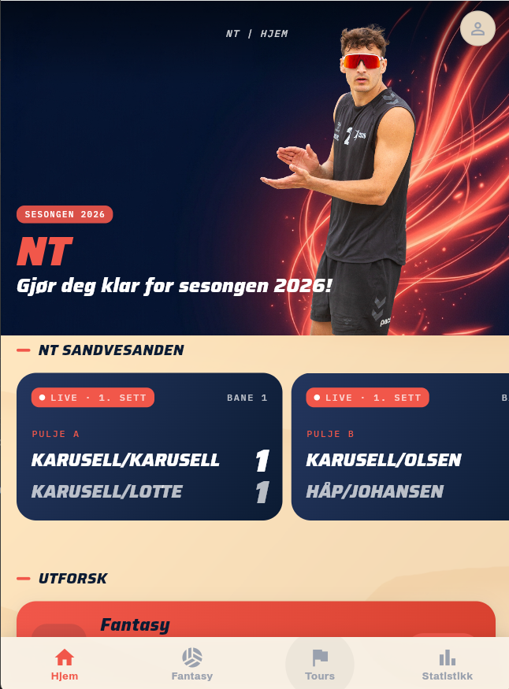
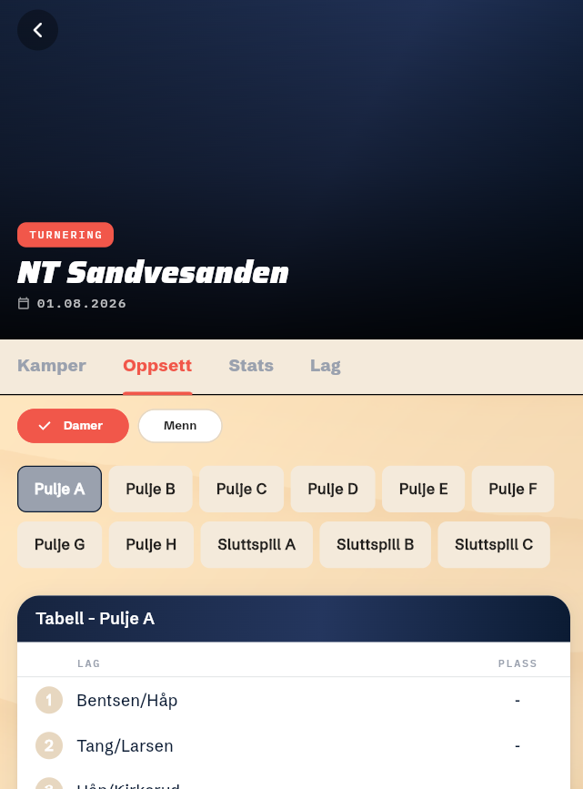
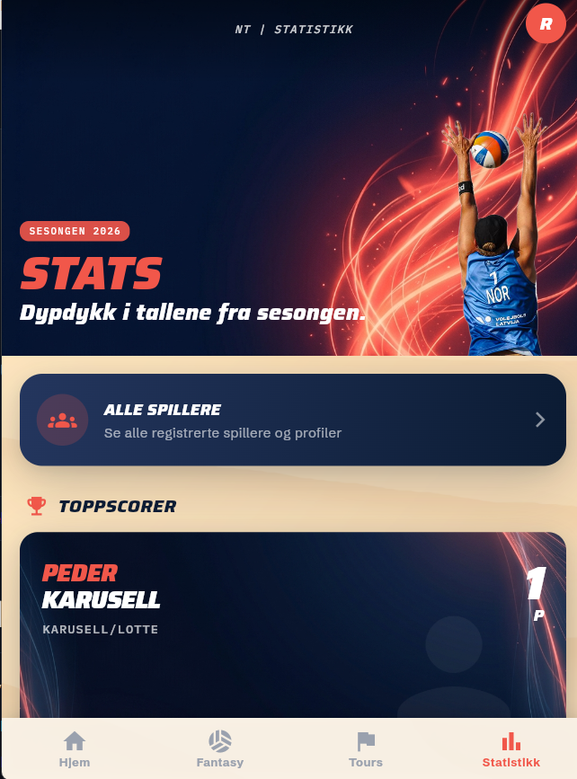
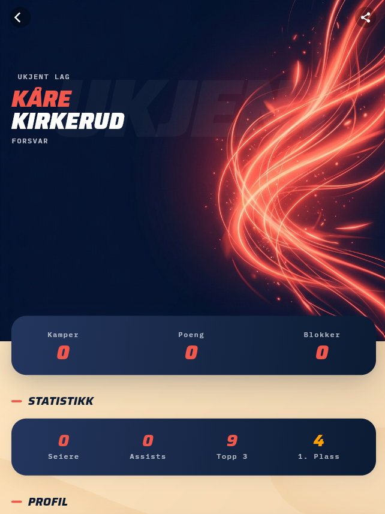

Admin
For arrangøren, på web
- Turneringer, klasser og påmeldinger
- Seeding etter rankingpoeng
- Puljer og hele sluttspillet generert på forhånd
- Baner og starttider per runde
- QR-kode til dommeren for hver kamp
Tre apper som tar en sandvolleyballturnering fra påmelding til resultat.
Et uoffisielt hobbyprosjekt bygget i Flutter og Firebase. Appene er ikke publisert i app-butikkene. Prosjektet viser hvordan norsk sandvolleyball kan organiseres, følges og analyseres digitalt.

Som hovedtrener i sandvolleyball ser jeg hvor mye av en turneringsdag som fortsatt skjer manuelt.
Påmeldinger samles i skjemaer og lister, kampoppsett settes opp i regneark, og resultater føres for hånd. Spillere og publikum må gå til en oppslagstavle eller vente på at noen legger ut resultater.
Spikedunk er mitt forsøk på å fjerne den friksjonen for alle tre gruppene som er på en turnering: arrangøren, dommeren og spillerne.
Tre Flutter-apper deler én Firestore-database. Appene snakker aldri direkte med hverandre. All data går gjennom databasen, og endringer vises i sanntid hos alle som lytter.
I stedet for én stor app fikk hver bruker sitt eget verktøy: admin kjører på web, dommerappen er en web-app som åpnes fra en QR-kode, og spillerappen er laget for mobil.
For arrangøren, på web
For dommeren, i nettleseren
For spillere og publikum, på mobil



Det viktigste designvalget i prosjektet: dommerappen lagrer ikke bare stillingen, men hver handling som et eget dokument.
Stillingen på kampen er bare et sammendrag. Hendelsene under er kilden til alt annet, og det gir tre ting nesten gratis: statistikk, fantasypoeng og en angreknapp som vet nøyaktig hva som skal rulles tilbake.
Et ess gir to hendelser: ett ess til serveren og én mottaksfeil til spilleren dommeren velger. Et vellykket angrep logger i tillegg legget til partneren og serven som var i spill.
matches/{id}/events/{id} { action: "Ace", player_id: "…", point_to: "home", phase: "Break Point", home_score: 12, away_score: 9, set_number: 1, prev_serving_team: "home", timestamp: serverTimestamp() }
Feltnavnene er hentet fra koden. Verdiene er et eksempel.
prev_serving_teamSlik flyter data gjennom systemet fra påmelding til finale.
Admin genererer alle sluttspillkampene før turneringen starter. Hver kamp vet hvilken kamp vinneren skal videre til, og om laget skal inn som lag A eller lag B.
Når dommerappen setter en kamp til ferdig, trigges Cloud Function matchRunner. Den kopierer vinnerlaget inn i neste kamp, og setter kampen klar når begge plassene er fylt. Funksjonen reagerer bare på selve overgangen til ferdig, så senere endringer på kampen trigger den ikke på nytt.
Oppsettet følger reglementet til Norges Volleyballforbund: A- og B-puljer, omspill, kryssseeding og indre mot ytre pulje. Jeg brukte reglementet som kilde mens jeg bygget.
// Only run on the transition to 'finished', not on subsequent writes. if (before["status"] === "finished" || after["status"] !== "finished") { return; } // … // Source prefix in THIS match (winner's data lives here). const srcPfx = homeWins ? "team_a" : "team_b"; // Destination prefix in the NEXT match. const dstPfx = nextMatchSlot === "a" ? "team_a" : "team_b"; // … if (otherTeamId && otherTeamId !== "placeholder") { updateFields["status"] = "scheduled"; } await nextMatchRef.update(updateFields);
I fantasy låser du hver spiller til én rolle, og spilleren gir bare poeng for handlinger i den rollen. Poengene er kalibrert slik at en gjennomsnittlig prestasjon gir omtrent 100 poeng per sett, uansett rolle.
Derfor er sjeldne handlinger verdt mye: et ess gir mer enn fem ganger så mye som et vellykket angrep. Det er spilldesign like mye som kode.
Med bakgrunn i UI/UX-design ville jeg at appene skulle ha et tydelig uttrykk: sand, nattblått og korall, med Saira som display-font og Schibsted Grotesk til tekst. Fargene, typografien og temaet ligger samlet i lib/theme, med lys og mørk modus.
Underveis hadde appen samlet opp rundt 56 ulike farger. I repoet ligger et eget oppdrag, docs/FARGEOPPRYDDING.md, for å samle dem i rundt 14 faste tokens, med regler om at designet skal se likt ut etterpå. Denne siden bruker de samme fargene og fontene.
Appene fungerer i demoturneringer, men de er ikke klare for ekte brukere. Jeg har gått gjennom koden selv og funnet dette.
Avansement og puljeplassering håndteres både i dommerappen, i admin og i Cloud Function. De kan skrive til de samme feltene samtidig.
La bare Cloud Functions eie turneringslogikken. Klientene skriver bare resultatet.
Dommerappen har ingen innlogging, så kamper og lag er åpne for skriving. Samtidig er reglene for strenge for vanlige brukere, som blir stoppet når de skal melde seg på.
Nye regler per rolle, en kortlivet kamp-token i QR-koden, og Firebase App Check.
Statistikk og fantasy henter alle kamper og alle hendelser og regner ut på mobilen. Spillere slås sammen på navn, ikke ID.
Regne ut statistikken på serveren når en kamp er ferdig, og bruke spiller-ID overalt.
Mye av koden er skrevet sammen med AI-agenter, Google Antigravity med Gemini, og Claude. Jeg bestemte hva som skulle bygges, hvordan dataene skulle henge sammen og hvordan appene skulle se ut. Agentene skrev mye av implementasjonen.
Det viktigste jeg lærte er at agentene trenger tydelige rammer. De beste resultatene kom når jeg skrev oppdrag med konkrete regler, som fargeoppryddingen: ikke endre layout eller logikk, jobb én fil om gangen, og stopp og spør hvis noe ser annerledes ut. Uten slike rammer ble det fort rot, blant annet 59 engangsskript i admin-repoet som jeg senere har ryddet bort.
Derfor har jeg også gjort en egen kodegjennomgang av hele systemet og prioritert det som må fikses før appene kan tas i bruk på ordentlig.
Kodegjennomgangen ble til en plan i fire faser. Sikkerhet kommer først, fordi betaling og flere brukere gjør dagens åpne database til en reell risiko.
Nye Firestore-regler med tester, eget utviklingsmiljø i Firebase og App Check.
Turneringslogikk bare på serveren, ferdigberegnet statistikk og påmelding som blir til lag.
Innlogging for dommere, betaling med Vipps og tofaktor for arrangører.
Kontosletting, personvernerklæring og publisering i App Store og Google Play.